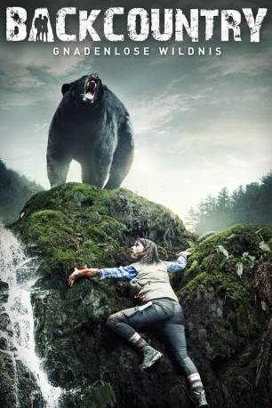

gesehen am 14.07.2015
gesehen am 14.07.2015Alternativ: Backcountry gesehen am 14.07.2015
 
 IMDB-Wertung: 6.0 / 10
IMDB-Wertung: 6.0 / 10  Metascore:
Metascore: 
Alex liebt es, durch die Natur zu wandern, Jenn nicht. Weil Alex' Überzeugungskünste erfolgreich waren, macht sich das Stadtpaar trotzdem zu einem Campingtrip in die kanadischen Wälder auf. Es geht den Blackfoot Trail lang, durch wunderhübsche Flora, der erste romantische Moment kommt bald und das erste gemeinsame Bad im Waldsee auch. Doch Alex und Jenn sind nicht alleine. Sie haben ein beunruhigendes Zusammentreffen mit einem Fremden namens Brad, einem Camper, der offenkundig ein Auge auf Jenn geworfen hat - und das Paar vielleicht weiterverfolgt, als es tiefer und tiefer in die Wälder vordringt. Irgendwas jedenfalls ist da draußen im Dickicht. Da hilft es nicht, dass sich Alex, entgegen anderem Bekunden, verlaufen hat. Dem Pärchen gehen die Vorräte aus, es kann niemanden zur Hilfe rufen. Und es schlingert geradezu in das Revier eines Bären…
Jahr: 2014
Dauer: 92 Minuten
FSK: 16
Land: Kanada Studio: Edel Media & EntertainmentTonspuren: DTS - ,
Untertitel: Englisch,
Auflösung: 1080p (1920x808) Größe: 6656 MB
Genre: Drama, Horror, Thriller
Regisseur: Adam MacDonald
Drehbuch: Adam MacDonald
Soundtrack: Vince Nudo
Darsteller:
 Eric Balfour als Brad
Eric Balfour als Brad Nicholas Campbell als Ranger
Nicholas Campbell als RangerDatei: X:\2014(A-F)\Backcountry Gnadenlose Wildnis (2014, FSK16, 1920x808).mkv seit 08.07.2015
Festplatte: HD 2013(I-Z)-2014(A-Z)
 Es gibt insgesamt 119 Filme in der Gruppe '2014(A-F)'
Es gibt insgesamt 119 Filme in der Gruppe '2014(A-F)'